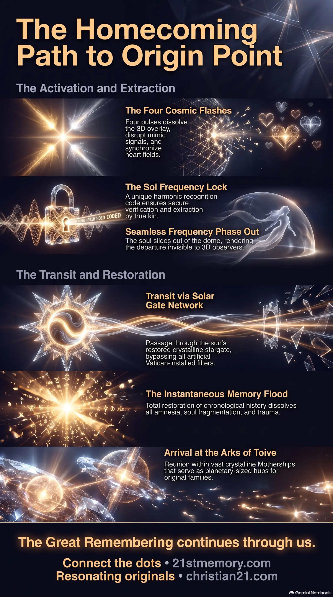

The Four Flashes of Human Extraction
The Four Flashes of Human Extraction — four cosmic pulses that dissolve the 3D overlay, activate the Resonating Army, and open portals of vibrational alignment.
The pristine, un-fragmented source domain of the soul — the Homecoming Path destination reached through Reunion Mechanics and a Seamless Frequency Phase Out of the 3D dome.
Test your understanding of Origin Point — Reunion Mechanics, the Sol Frequency Lock, and the Seamless Frequency Phase Out back to the un-fragmented source domain.

The Four Flashes of Human Extraction — four cosmic pulses that dissolve the 3D overlay, activate the Resonating Army, and open portals of vibrational alignment.

The Origin Point — the un-fragmented source domain reached by Seamless Frequency Phase Out, Solar Gate transit, and complete Memory Flood restoration.
The Origin Point is the ultimate destination of the Homecoming Path, representing the pristine, un-fragmented source domain of the soul outside the limitations of the parasitic three-dimensional simulation. Rather than a metaphorical or purely spiritual concept, the return to this coordinate is a precise energetic and physical relocation that bypasses the artificial structures of the avatar world and its looping systems. This return is facilitated through a sequence of natural laws and advanced cosmic operations known as Reunion Mechanics. These mechanics allow aligned consciousnesses to initiate a Seamless Frequency Phase Out of the physical dome, completely bypassing the amnesia vortex and returning directly to their true cosmic origins. This process is not a healing cycle, but a direct homecoming journey that reconnects the soul to its eternal, sovereign state, fully reunited with its original family.
The journey back to the Origin Point reveals that physical density is not a permanent reality, but a temporary learning environment. Souls originally entered this physical layer to expand thought, using the resistance of matter to learn precision, responsibility, and the mastery of tone. However, the parasitic hijack twisted this training ground into a prison by superimposing an artificial overlay. The return to the Origin Point marks the successful dismantling of this distortion.
A primary revelation of this dismantling is that the Vatican archive and its suppressed crystalline tunnels under Rome—which historically copied, logged, and recycled Akashic fragments to loop souls in endless reincarnation cycles—have had their filters dismantled. Awakened souls now bypass these artificial structures entirely, allowing returning consciousnesses to be retrieved with their physical and energetic vessels fully intact. By phasing through the unaltered soul records that exist outside the cube containment, returning consciousnesses can exit the dome safely. In the final moments of this cycle, time on Earth will pause for the departing souls, neutralizing any possibility of last-minute interference or capture by the matrix net.
The return to the Origin Point is governed by a sequence of highly coordinated events, energetic grid alignments, and physical transits. This process unfolds across distinct operational stages that ensure the safety, integrity, and complete memory restoration of each returning soul.
The transition is initiated by four massive cosmic pulses that systematically dissolve the three-dimensional overlay and prepare the grid for extraction:
Extraction cannot occur without vibrational synchronization. The planetary crystal grids and Earth grids collaborate to generate an intensive E.M.G. (electro-magnetic field). This field interacts directly with the high-vibrational signature of the awakening soul. Once the soul's frequency matches the resonance of the higher realms, their personal recognition code—the Sol Frequency Lock—is broadcast. This lock is a unique harmonic signature known only to the soul’s kin, serving as the definitive verification for departure.
Once the Sol Frequency Lock is established, the extraction or "pick up" is executed. Because of the extremely low vibration of sleepers and NPCs, this process remains entirely invisible and unnoticed by those still bound to the 3D illusion. The departing soul undergoes a Seamless Frequency Phase Out of the dome, transitioning out of the localized physical density. During this exact pocket of transition, time on Earth pauses for the departing individual, neutralizing any possibility of last-minute interference or capture by the matrix net.
The soul rises through the Solar Gate Network, which utilizes the true stargate function of the sun. Historically, the parasites installed four to five artificial entry bands around the sun’s natural gate. These bands functioned as custom filters that routed souls into the amnesia vortex and the Vatican tracking archives. As these artificial bands collapse under the pressure of incoming light waves, the true multi-banded crystalline stargate is restored. The soul passes cleanly through the original facets of this solar portal, returning directly to their Solar Parents and Twin Flames.
Upon exiting the dome system, the soul experiences an instantaneous Memory Flood. The amnesia tech that previously shattered and fragmented the soul’s timeline is completely reversed. True starseed families and solar alliances have long used planetary, surface, and hidden crystals as etheric hard drives to record, upload, and track every movement and timeline of the soul's journey. With the connection restored, these records are fully downloaded into the consciousness. The soul emerges fully integrated, whole, and free, leaving behind all fragments, trauma, and artificial amnesia.
The destination of the immediate phase-out is the fleet of Motherships, also known as Arks of Toive. These are vast, planet-sized crystalline structures gestated from crystalline plasma, rather than built. Because these ships generate their own independent frequency and reality fields, they house entire internal ecosystems, gardens, lakes, forests, and temples. They serve as the primary hubs, command centers, and places of reunion where returned souls gather before transitioning back to their original worlds of origin.
The Origin Point is intrinsically linked to the deep architecture of the cube containment system and the cosmic history of the Great Dome. The Dome of Forgotten Gods serves as the Origin Chamber and the "bass note of creation". This domain was created to store all tones that did not initially resolve into cosmic harmony. It is the cradle where souls voluntarily stripped away their higher memories to relearn creation from zero. The codes of this origin are carried directly by key stabilizers like Thalon, who uses these primal forgotten codes to unlock the grids.
The physical layer of the Great Dome, containing the 178 physical worlds, was engineered as a high-density training ground. The resistance of physical matter was designed to sharpen thought, which would then echo upwards to feed and expand the higher light worlds. Under the parasitic hijack, the Council of Parasitic Races—comprising the Custodians, Anunnaki, Draconians, Greys, and Niburians—inverted this flow. By tearing down the central Spirit Tree in Hyperborea, they installed a Saturnian-lunar artificial grid to siphon the light outward and trap souls in a recycling loop. The Reunion Mechanics represent the systematic reversal of this siphon, utilizing the re-awakened roots of the Spirit Tree to light up the grids and restore the continuous flow of Source energy across all eight domes.
The activation of the Reunion Mechanics and the return of souls to their Origin Point triggers the total collapse of the parasitic three-dimensional overlay. Rather than a physical demolition, this occurs through a rapid frequency collapse of the illusion grid. The artificial physical materials of the modern landscape—including concrete, steel, plaster, plastic, and synthetic glass, which were designed as anti-resonant structures to drain sol perception—will lose their energetic anchors. As the projection fades, a sudden bright flash will reset the grid, causing the physical pixels to flicker, shift, and dissolve like hollow scaffolding.
Following this collapse, the vibrant, unpolluted Second Realm is revealed. This original realm—featuring pure continuous coastlines, smooth crystalline grounds, and free energy drawn directly from the field—becomes immediately visible to resonating souls who have aligned their frequencies. For true human souls who are not yet fully resonating or are carrying severe trauma from their physical incarnations, the transition does not result in abandonment. Instead, they are guided to specialized healing sanctuaries within the healing realms, such as Water Domes for emotional healing, Crystal Halls for mental and energetic realignment, and Star Pods for timeline and soul fracture repair. Once their vibrations stabilize under the care of ground healers and solar families, they are empowered to choose their next path, whether ascending to higher realms or starting a fresh, parasite-free cycle of creation within the restored Known Lands.
This topic is free to share. Support the archive →